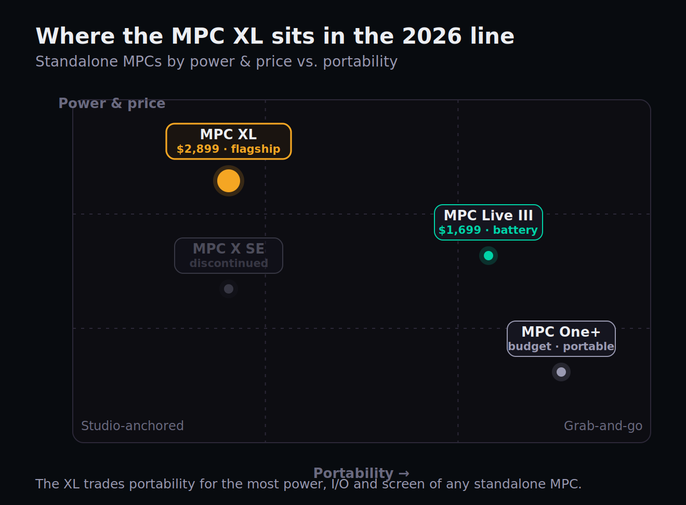
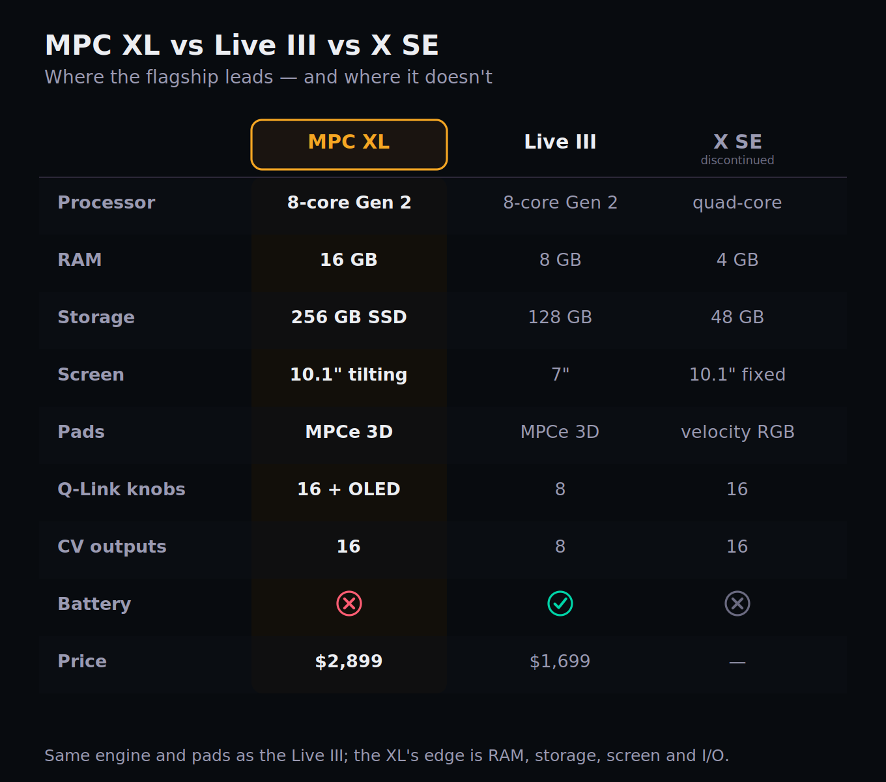
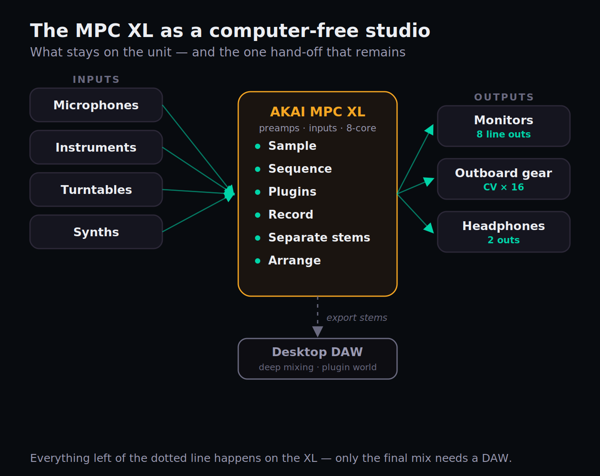

Akai has done something this year it almost never does: it shipped a brand-new flagship just months after shipping the last one. The MPC Live III landed in October 2025 and reset what a standalone groovebox could do. Then, at NAMM in January 2026, Akai unveiled the MPC XL — a $2,899 studio monolith that takes the Live III's brain and bolts it into a machine that is never leaving your desk. If you've spent any time around the MPC line, the obvious question writes itself, and it's the one this review is built to answer: with the Live III sitting right there for $1,200 less, what exactly is the extra money buying you?
We don't own the unit, so you won't find a fabricated meter reading or an invented frequency chart here — a faked measurement is worse than none. What you'll get instead is the honest decision the XL forces, built from Akai's verified specs, hands-on coverage from the outlets that have one in front of them, and the context of a catalog that already covers this whole product line. Every spec and the price were re-checked against Akai and current retail listings this session, because an old review's spec table is never ground truth. Here's what the $2,899 actually gets you, where it's a genuine leap, where it isn't, and exactly who should buy it.
The MPC XL is the most powerful and most complete standalone MPC ever made, and for a producer building a permanent, computer-optional studio around one box, it's superb. But buy it for the right reason. Its 8-core engine and 3D pads are identical to the cheaper MPC Live III — what your extra $1,200 buys is double the RAM, four times the storage, a big tilting screen, a serious control surface, and far deeper studio I/O. If you want a do-it-all studio centerpiece that stays put, the XL earns it. If you want portability, a battery, or the same core workflow for less, the Live III is the smarter spend. This is a "which MPC," not a "buy or skip."
The Verdict
The most capable MPC ever built — a true computer-optional studio hub, priced for the producer who wants one box to do everything and never move it.
| Build & I/O | 9.2 | |
| Workflow & control surface | 9.0 | |
| Processing power | 9.4 | |
| Standalone completeness | 8.3 | |
| Value for money | 7.4 | |
| Overall | 8.7 |
That overall is a defended judgement, not an average, and the spread tells the story. Processing power (9.4) is the easy one: an 8-core Gen 2 processor and 16GB of RAM make this comfortably the most powerful MPC ever, and the most powerful device Akai has shipped, full stop. Build & I/O (9.2) reflects a premium, road-ready studio unit with the deepest connectivity in the line. Workflow & control surface (9.0) rewards the 10.1-inch tilting screen, the 16 OLED Q-Links, and the XL Channel Command section that finally make on-unit mixing feel direct. Standalone completeness (8.3) is high but honest: this genuinely replaces a computer for most of the job, and still hands off for the last mile of mixing and plugins. Value (7.4) is the soft spot, and it's the whole reason this review exists: you are paying a $1,200 premium over a machine with the same engine. Every one of those numbers is defended below.
What the MPC XL Actually Is — and What's New
Strip away the marketing and the MPC XL is a standalone sampler, sequencer, and audio workstation that runs without a computer. That's the same one-sentence pitch the MPC has carried since Roger Linn's MPC60 in 1988, and the XL keeps the faith: 16 pads, a sampling engine, a sequencer, and the immediate, tactile, no-mouse workflow that made the format the backbone of hip-hop and a permanent fixture in electronic music. What's changed in 2026 is the muscle behind that workflow, and the muscle is considerable.
At its core sits a Gen 2 8-core processor that Akai rates at four times the power of previous MPC generations, paired with 16GB of RAM and a 256GB internal NVMe SSD with a SATA expansion bay for more — useful headroom once you start loading serious sample libraries. Running the current MPC3 OS, the unit handles up to 32 plug-in instruments, 16 audio tracks, and 256 simultaneous voices. Those numbers matter because they describe the ceiling that older MPCs kept slamming into: dense plugin stacks and big sample libraries are exactly what choked the 2GB and 4GB machines, and forced producers to bounce projects to a desktop to finish them. The XL's headroom is the point of the whole exercise.

The surface you touch is new, too. The XL debuts on the MPC X chassis the MPCe pads introduced on the Live III — 3D-sensing pads divided into four quadrants that respond to velocity, pressure, aftertouch, and X/Y finger movement. Above them sit a 10.1-inch HD multi-gesture touchscreen that tilts, 16 Q-Link knobs each with its own OLED display, an assignable performance touch-strip, a 16-button RGB step sequencer, and a dedicated XL Channel Command section — an OLED-and-encoder strip for grabbing mixing and recording parameters without diving into a menu. It is, by a distance, the most control-rich MPC Akai has ever built. And crucially, it does this with the same sampling, chopping, and sampling fundamentals that anyone coming from an MPC One+ or an older X already knows by heart.
The bundle is generous in a way that quietly props up the value case. The XL ships with the MPC3 Pro Pack — a feature expansion that adds AIR pro plugins like Reverb Pro, Visual EQ4, Fabric Select, and Utility — alongside Native Instruments' MPC Edition Play Series content (Analog Dreams) and the Lone Forest Expansion. Akai also announced a new partnership with Spitfire Audio, with integrations beginning on the XL. None of that is a reason to buy on its own, but it means the machine arrives ready to make finished-sounding music out of the box, not a blank slate you have to furnish.
Is It Worth Upgrading From the MPC X?
The XL is officially the successor to the MPC X SE, which Akai has now discontinued. If you're sitting on an original MPC X or the 2023 X SE, this is the comparison that actually decides your wallet, and here the answer is refreshingly clear: this is a generational leap, not a refresh. The X SE ran a quad-core processor with 4GB of RAM and 48GB of storage; the original X had just 2GB. The XL moves to an 8-core CPU with 16GB — four times the memory of the X SE — and a 256GB SSD that dwarfs anything in the older line. The leap in headroom alone is the difference between a machine that asks you to bounce-and-free and one that just keeps going.
It isn't only raw numbers. The X SE's pads were velocity-sensitive RGB pads; the XL's are 3D-sensing MPCe pads, which is the biggest change to how an MPC plays in a decade. The screen now tilts, which sounds trivial until you've spent a session hunched over a flat panel under studio lights. MPC3 OS brings desktop-grade stem separation, clip launching, and the matured multi-track workflow that the older OS simply didn't have. And the CV connectivity expands from the X's modest set to 16 CV outputs, opening the XL up as a serious modular and analog hub. For a producer whose X regularly runs out of road, this is a justified upgrade.
The honest counterweight: if your current MPC X projects run fine — if you're not hitting plugin limits, not waiting on loads, not fighting storage — the upgrade is real but not urgent. The X SE is a capable machine that will keep making records for years. The XL's case over the X is strongest for the producer pushing dense, plugin-heavy, sample-library-heavy sessions, and weakest for the beatmaker whose workflow already fits comfortably inside 4GB. Be honest with yourself about which one you are before you spend $2,899 to solve a ceiling you never actually hit.
The Harder Question: XL or the Cheaper MPC Live III?
This is the comparison that should keep you up at night, because it's the one Akai's marketing is quietest about. Here is the fact that reframes the entire purchase: the MPC XL and the MPC Live III share the exact same Gen 2 8-core processor and the exact same MPCe 3D pads. The brain and the playing surface — the two things most people assume you're paying a premium for — are identical. The XL is not a faster, better-feeling Live III. It's a differently-shaped one.
So what does the extra $1,200 actually buy? Four concrete things. Double the RAM (16GB versus 8GB), which is the one spec that genuinely lets the XL sustain bigger projects than the Live III can. Double the storage (256GB versus 128GB). A much larger, tilting screen (10.1 inches versus 7). And a vastly deeper control surface and I/O — 16 OLED Q-Links and the XL Channel Command versus the Live III's slimmer set, plus eight line outs, phono inputs, instrument inputs, and 16 CV outputs against the Live III's eight. For a studio that wants every cable and every knob on the desk, that's a real, tangible upgrade.

Now the case against the XL, stated as plainly as the reviewers who've used both put it: in practical terms, there's very little the XL can do that the Live III can't. Both run the same OS, the same plugins, the same stem separation, the same sequencing. And the Live III answers back with three things the XL flatly does not have — an onboard battery, built-in stereo speakers, and a microphone. The Live III is a complete, go-anywhere studio you can use on a train; the XL has to be plugged into the wall. Comparing them head-to-head as "better or worse" misses it. The honest framing, and the one the better hands-on reviews land on, is that the XL trades the Live III's portable immediacy for an all-encompassing studio hub. They're two takes on the MPC, not a ladder.
Put bluntly: if the 7-inch screen, 8GB of RAM, and slimmer I/O don't constrain the music you actually make, the Live III gives you the same engine and the same pads for $1,200 less, and throws in portability. The XL is for the producer who knows they want the big screen, the deeper I/O, the extra RAM headroom, and a machine that lives permanently at the heart of a room. If you're cross-shopping the wider standalone field, our Maschine MK3 vs MPC Live II piece, the Ableton Push 3 standalone review, and our Push 3 vs Maschine MK3 head-to-head map the rival ecosystems.
The "Computer-Free Studio," Interrogated
Akai's headline pitch for the XL is that it eliminates the laptop, the audio interface, and the mixer — one box, no computer. It's a seductive claim, and for a large share of producers it's genuinely true. But "no computer required" and "no computer ever useful" are different statements, and knowing exactly where the line falls is the difference between a happy purchase and an expensive disappointment. Let's test the claim honestly against the working producer's day.

Where the XL fully delivers on computer-free is the entire front half of music-making, and then some. Sampling, chopping, sequencing, programming drums, recording audio tracks through its own preamps, playing in parts, and arranging a full song — all of it happens on the unit, with no laptop in the room. The 16GB of RAM is what makes this credible at scale: the dense, plugin-heavy sessions that used to force a desktop hand-off now run on the box. For beatmaking, sampling-based production, and writing complete arrangements, the XL is a complete studio, and the "no computer" claim holds.
Where it still hands off is the last mile: deep mixing and the wider plugin ecosystem. You can mix on the XL — the XL Channel Command and the OLED Q-Links make on-unit mixing more direct than ever — but an engineer chasing a polished, competitive final mix will often still export stems and finish in a desktop DAW with their full third-party plugin chain. The XL's internal effects and AIR plugins are good and growing, but they aren't the unlimited library of a computer running every VST you own. The realistic mental model is this: the XL is a complete writing-and-production studio that optionally finishes elsewhere — not a literal, one-to-one replacement for a DAW in every workflow. For most producers, that's exactly enough. For a mix engineer's final 10 percent, the laptop quietly comes back out. If you're new to where that boundary sits, our guide on how to make a beat walks the on-unit half of that flow, and our trap-beat walkthrough shows the same chain applied to a specific genre.
The MPCe Pads and the Control Surface
The single biggest change to how an MPC feels in years is sitting under your fingers. The XL's MPCe pads divide each pad into four quadrants and sense not just velocity and pressure but aftertouch and X/Y movement — meaning a single pad can morph, layer, and modulate a sound based on exactly where and how you press it. It pushes the MPC closer to an MPE expression controller like the Roli Seaboard or Ableton's Push 3 than to a traditional drum pad. For finger-drummers and players who lean into nuance, it's a genuine expansion of what the instrument can do; for someone who treats pads as simple triggers, it's a feature you'll grow into rather than need on day one.
The rest of the surface is built for speed. The 16 Q-Link knobs each carry their own OLED screen, so you always see what a knob is controlling and its current value — no guessing, no menu-diving to confirm. The XL Channel Command strip gives you immediate, dedicated access to level, sends, and recording parameters, which is the kind of thing that sounds minor and turns out to shave real friction off every session. The 16-button RGB step sequencer and the assignable touch-strip round out a layout designed so that the common moves — tweak a parameter, punch in a pattern, ride a fader — happen with a hand, not a stylus and a sub-menu.
The 10.1-inch tilting screen ties it together. It's the same size as the X SE's panel but it now angles toward you, which matters more than the spec sheet suggests once you've spent hours editing waveforms and navigating a busy arrangement. Combined with the multi-gesture touch support, it makes the XL's larger projects navigable in a way the 7-inch Live III simply can't match. If your work involves complex, multi-track sessions you need to see, this screen is a meaningful part of what the premium buys. For the timing and feel side of programming that surface serves, our Pocket groove tool and the swing and groove entries are worth a detour.
I/O and Connectivity: The Studio-Hub Case
This is where the XL makes its clearest argument for being a studio centerpiece rather than just a bigger groovebox, and it's also where one honest disappointment lives. On the analog side you get two XLR/TRS combo inputs with mic preamps and phantom power, two dedicated instrument inputs for guitars and basses, two phono inputs for sampling straight off a turntable, eight separate line outputs, and two headphone outputs. On the control and modular side, 16 CV outputs via eight stereo jacks, 32 channels of MIDI I/O, plus Wi-Fi, Bluetooth, an SD card slot, and additional USB. It's a properly equipped hub: you can run a small studio's worth of sources and outboard through this one unit.
The standout modern touch is the USB-C connection that carries 24 channels of audio I/O, turning the XL into a class-compliant audio interface for your computer when you do want one in the loop. That's the bridge that makes the "computer-optional" framing real rather than rhetorical — the XL can be your whole studio, or it can drop 24 channels of audio into a DAW when a session calls for it. Combined with the eight discrete line outs, it slots cleanly into a hybrid setup without you having to choose a side.
The disappointment, and it's worth naming because the better reviews do: the analog connectivity hasn't really grown relative to the MPC X. The combo inputs, instrument inputs, and eight outs are broadly the same set the X carried; the meaningful expansion is the multichannel USB-C streaming and the doubled CV count, not new analog jacks. For a new flagship at this price, a little more physical I/O wouldn't have hurt. It doesn't undercut the case — the XL still has the deepest connectivity in the standalone MPC line — but if you were expecting a dramatic leap in analog routing over the X, temper that. The leap is in the brain and the screen, not the back panel.
MPC3 OS, Stems, and the Workflow in Practice
Hardware is only half of an MPC; the OS is the other half, and MPC3 is the most capable version Akai has shipped. The headline workflow features the XL inherits and extends are clip launching (an Ableton-style way to trigger loops and build arrangements live), a refined multi-track recording and arranging environment, and one-button stem separation. That last one is quietly important: because the XL has the CPU headroom, it runs the higher-quality stem-separation algorithm from the desktop MPC software rather than a lighter standalone variant — the same advantage the Live III's processor unlocked. Pull a full track in, split it into parts, and re-sample or re-flip them on the spot.
In day-to-day use, the combination of MPC3 OS and 16GB of RAM is what changes the feel from older MPCs. Loads are fast, dense projects stay responsive, and the ceiling that used to define the standalone experience — that nagging sense of rationing plugins and tracks — recedes. This is the machine running the modern MPC workflow without the asterisks. The quantization engine, the step sequencer, the sampling pipeline: all the fundamentals are intact, just with room to breathe.
Two honest notes keep this grounded. First, the MPC is a deep system; newcomers should expect a real learning curve — the Live III's manual runs to hundreds of pages, and the XL is no simpler. The control surface softens that curve, but it doesn't erase it. Second, MPC3 OS continues to evolve through updates, so some rough edges and promised refinements are the normal reality of a platform that's still maturing. Neither is a knock against the XL specifically; both are the standing truth of buying into the MPC ecosystem in 2026. If you're weighing this against the rival camp, our Native Instruments Maschine MK3 review and Maschine+ review lay out how that ecosystem's workflow differs.
The Real Cost and the Value Verdict
At $2,899 (£2,499.99 / €2,899.99), the MPC XL is the most expensive standalone MPC Akai sells, and the price is the crux of the whole review. To put it in the line: the MPC One+ is the budget standalone entry; the MPC Live III is $1,699 with a battery and the same engine; the X SE it replaces sold for less and is now discontinued. The XL sits alone at the top, and you're paying flagship money for flagship completeness.
Is it good value? That depends entirely on whether you need what the premium buys. Measured purely on engine-per-dollar, the answer is no — the Live III delivers the identical CPU and pads for $1,200 less, and that gap is impossible to ignore. That's why value is the one score we held back to 7.4: this is excellent hardware sold at a real premium over a machine that shares its heart. But measured as a complete studio-per-dollar — the big tilting screen, double the RAM headroom, the OLED Q-Links and Channel Command, the eight outs and deep CV, all in one road-ready unit that never has to move — the price is defensible. You're not overpaying for power; you're paying for permanence, scale, and control surface. The bundled MPC3 Pro Pack, NI content, and Spitfire partnership soften the sticker a little further.
Worth pricing into that calculus is what ships in the box on the software side, because it offsets real money you might otherwise spend. The XL comes with the MPC3 Pro Pack — AIR's Reverb Pro, Visual EQ4, the Fabric Select multi-effect and a Utility plugin — alongside the Native Instruments MPC Edition (Analog Dreams and the Lone Forest expansion) and content from a new Spitfire Audio partnership. None of it transforms the value equation on its own, but a producer who would have bought a decent algorithmic reverb and a sound library anyway is looking at a few hundred dollars of tools already loaded and running natively on the unit, no plugin-compatibility caveats attached. It's the kind of bundle that's easy to overlook on the spec sheet and genuinely useful the first week you own the machine.
One practical note for buyers: it's a big, heavy desk unit (just under 16 pounds and a foot and a half wide) with no battery, designed to stay put. Budget for the space and a permanent home, not a gig bag. If you want the affiliate-friendly bottom line: this is a buy-once, keep-for-years studio anchor, and at this price it should be treated as exactly that kind of decision — deliberate, not impulsive.
Who Should Buy the MPC XL (and Who Shouldn't)
Buy the XL if you're building a permanent, computer-optional studio around a single box and you want the most capable one available. It's the right call for the producer who wants the big tilting screen for complex projects, the RAM headroom for dense plugin-heavy sessions, the deep I/O to run mics, instruments, turntables, and outboard through one hub, and the control surface to mix and perform without menu-diving. If "studio centerpiece that does everything and never moves" describes your goal, nothing in the standalone world does it better right now. It also suits the X or X SE owner who genuinely hits their machine's ceiling and wants a generational jump.
Think twice if any of these is you. You want portability, a battery, or built-in speakers and a mic — buy the Live III, which shares the XL's engine and pads, adds all of that, and saves you $1,200. You're a beatmaker whose projects fit comfortably in 8GB and a 7-inch screen — the Live III gives you the same music for less. You're on a budget or new to the format — the MPC One+ is the smarter entry point. You live inside Ableton's clip-and-scene paradigm — the Push 3 standalone will feel more like home. And if you primarily need a controller for a computer-based setup rather than a standalone brain, a Maschine MK3 or a dedicated MIDI controller does that job for a fraction of the cost.
The MPC XL earns its 8.7 by being exactly what it sets out to be: the most powerful, most complete, most control-rich standalone MPC ever made, a true studio anchor for the producer who wants one. It loses points only on value, and only because Akai itself sells a machine with the same heart for far less. Know which producer you are, and the XL either becomes an obvious yes or quietly points you one model down the line. Either way, that clarity — not the spec sheet — is the actual purchase decision. Make it on purpose.
Decide It for Yourself: Three Checks Before You Buy
A $2,899 decision deserves twenty minutes of honest self-interrogation. These three graded checks are built to surface whether the XL is genuinely your machine — or whether the money points one model down the line.
- Open your three most recent projects on your current machine (or in your DAW) and write down the peak plugin count and track count each one actually used.
- Compare those numbers honestly against 8GB (Live III) versus 16GB (XL) of headroom — would your real sessions ever come close to maxing the smaller machine?
- If they never approach the ceiling, that's your first strong signal the Live III's engine is all you need. If they routinely push it, the XL's RAM is doing real work for you.
- List every source you'd plug into the XL: mics, instruments, turntables, synths, outboard. Count the inputs and outputs you actually need at once.
- Check that count against the XL's I/O (2 combo mic ins, 2 instrument, 2 phono, 8 line outs, 16 CV) versus the Live III's slimmer set — does your studio genuinely fill the bigger back panel?
- Decide whether you'll ever use the 24-channel USB-C audio interface into a DAW. If a computer stays in your flow, factor that into the "computer-free" premium you're paying for.
- Be brutally honest about where you make music: a fixed desk, or trains, green rooms, and friends' couches? Write down the last ten places you actually produced.
- If even two of those had no power outlet or no desk, the battery-and-speakers Live III is quietly the better buy — the XL has neither, by design.
- Now price the gap: $1,200 between XL and Live III. Decide whether the bigger screen, the RAM, the control surface, and the deeper I/O are worth that exact figure to your workflow — not to a spec sheet.